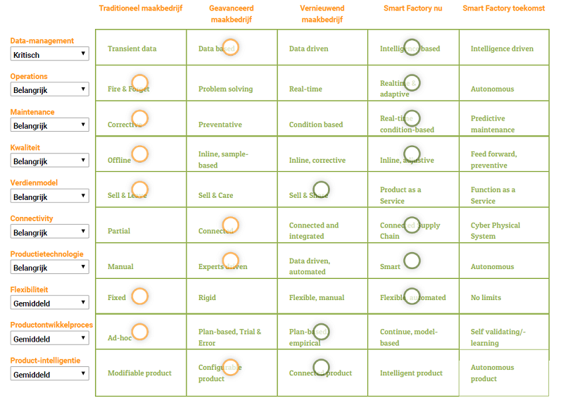
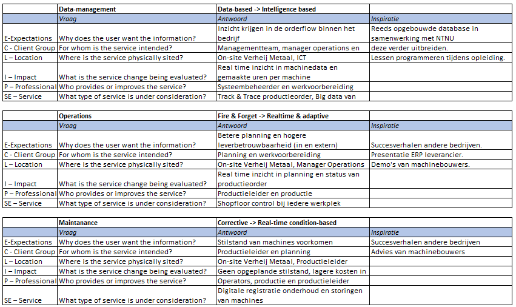

Smart start
Over het vak en de leerdoelen
ken ik de kernelementen uit het Smart Industry wiel en RAMI model, herken ik deze kernelementen in mijn eigen organisatie.
Ook kan ik als Smart Industry professional de smart maturity level van mijn eigen organisatie bepalen,
een Smart Research proces ontwerpen, deze uitvoeren en de kwaliteit ervan evalueren,
zodat ik gefundeerde bedrijfsmatige beslissingen kan nemen.
Daarnaast ken ik als Smart Industry professional de weg binnen het moderne ICT-landschap,
zodat ik een waardevolle bijdrage kan bieden bij discussies hierover en ken ik de belangrijkste
moderne basistechnologieën, waarmee ik kan experimenteren en anderen kan inspireren.
Smart Factory Assessment
aan de orde gekomen en is er kennis gemaakt met een breed pallet aan smart technologieën. Om te voorkomen dat dit
resulteert in een technology push is het belangrijk om de behoefte vanuit het bedrijf waar ik werkzaam ben in beeld te
krijgen. Dit wordt ook wel vraagarticulatie genoemd. Het resultaat daarvan is een technology pull.
De tool Smart Industry Scan is gebruikt in deze vraagarticulatie. De Smart Industry Scan omvat 3 stappen.
Stap 1 is per competentie aan te geven op wel niveau je bedrijf op dit moment opereert en op wel niveau je in de
toekomst wil opereren.
Stap 2 is na de scan per competentie aangeven hoe belangrijk deze is voor de ontwikkeling van je bedrijf.
Stap 3 is de uitslag, hier staan de competenties met de hoogste prioriteit bovenaan.

In de afbeelding hierboven staan de resultaten van de scan die is ingevuld voor mijn bedrijf.
Hieruit komt naar voren dat er een groot behoefte is aan een verbetering in Data-management.
Daarnaast is het belangrijk om Operations en Maintenance goed in kaart te brengen en te onderzoeken hoe men
naar het gewenste niveau kan komen.
Smart Research

Na aanleiding van deze ECLIPSE vraagstelling kan er een plan van aanpak of implementatieplan gemaakt worden, om tot
een gedegen uitvoering van de benodigde werkzaamheden te komen. Pas dan kan er gestart worden met het uitvoeren
van de werkzaamheden om tot het gewenste niveau te komen.
Om meer te weten te komen over onderwerpen die de uitkomst zijn van de Smart Factory Scan, heb ik gezocht naar
2 wetenschappelijk artikelen op het internet.
Het eerste artikel gaat over Data Management Challenges in Production Machine Learning.
Data Management Challenges in Production Machine Learning (pdf)
Het artikel behandelt gegevensbeheerproblemen die zich voordoen bij machine learning die in productielijnen wordt
ingezet. Er wordt gekeken naar kwesties met betrekking tot het begrijpen, valideren, opschonen en verrijken van
trainingsgegevens. Het doel van dit artikel is om deze problemen naar voren te brengen en verbanden te leggen met
eerder werk in databases.
Het tweede artikel gaat over Real-time production planning and control system for job-shop manufacturing.
Real-time production planning and control system for job-shop manufacturing (pdf)
Dit artikel gaat over de kloof tussen theorie en praktijk in het vermogen van productieplanning en -controle systemen
om de dynamische storingen in het productieproces vast te leggen. Er is een behoefte onstaan om verschil tussen
geplande en feitelijke activiteiten in realtime te identificeren en ook om corrigerende maatregelen te nemen.
Onderzoekers hebben een dynamisch model gemaakt en stellen een uitgebreid productieplanning en
-controle systeem voor. De efficiëntie wordt verder onderzocht door gegevens van een echte fabrikant
te implementeren.
Tevens zijn deze artikelen toegevoegd aan Zotero.